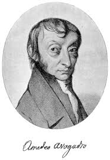

AMEDEO AVOGADRO

Introduction
Lorenzo Romano Amedeo Carlo Avogadro di Quaregna e di Cerreto, Count of Quaregna and Cerreto (9 August 1776, Turin,Piedmont – 9 July 1856) was an Italian scientist. He is most noted for his contributions to molecular theory, including what is known asAvogadro's law. In tribute to him, the number of elementary entities (atoms, molecules, ions or other particles) in 1 mole of a substance,6.02214179(30)×10^23, is known as the Avogadro constant, one of the seven SI base units and represented by NA.
About Avogadro
Amedeo Carlo Avogadro was born in Turin, Italy in 1776 to a noble family of Piedmont, Italy.
He graduated in ecclesiastical law at the early age of 31 and began to practice. Soon after, he dedicated himself to physics and mathematics (then called positive philosophy), and in 1809 started teaching them at a liceo (high school) in Vercelli, where his family lived and had some property. In 1810, he published an article with the title Essai d'une manière de déterminer les masses relatives des molécules élémentaires des corps, et les proportions selon lesquelles elles entrent dans ces combinaisons ("Essay on Determining the Relative Masses of the Elementary Molecules of Bodies and the Proportions by Which They Enter These Combinations"), which contains Avogadro's hypothesis. Avogadro submitted this essay to a Jean-Claude Delamétherie's Journal de Physique, de Chimie et d'Histoire naturelle ("Journal of Physics, Chemistry and Natural History", Piedmont at the time forming part of the First French Empire).
Little is known about Avogadro's private life, which appears to have been sober and religious. He married Felicita Mazzé and had six children. Avogadro held posts dealing with statistics, meteorology, and weights and measures (he introduced the metric system into Piedmont) and was a member of the Royal Superior Council on Public Instruction.
In honor of Avogadro's contributions to molecular theory, the number of molecules in one mole was named Avogadro's number, NA or "Avogadro's constant". It is approximately 6.0221415 × 1023. Avogadro's number is used to compute the results of chemical reactions. It allows chemists to determine amounts of substances produced in a given reaction to a great degree of accuracy.
Avogadro’s work
Avogadro's Law states that the relationship between the masses of the same volume of different gases (at the same temperature and pressure) corresponds to the relationship between their respective molecular weights. Hence, the relative molecular mass of a gas can be calculated from the mass of sample of known volume.
Avogadro developed this hypothesis after Joseph Louis Gay-Lussac had published in 1808 his law on volumes (and combining gases). The greatest problem Avogadro had to resolve was the confusion at that time regarding atoms and molecules. One of his most important contributions was clearly distinguishing one from the other, stating that gases are composed of molecules, and these molecules are composed of atoms. For instance, John Dalton did not consider this possibility. Avogadro did not actually use the word "atom" as the words "atom" and "molecule" were used almost without difference. He believed that there were three kinds of "molecules," including an "elementary molecule" (our "atom"). Also, more attention was given to the definition of mass, as distinguished from weight.
In 1815, he published Mémoire sur les masses relatives des molécules des corps simples, ou densités présumées de leur gaz, et sur la constitution de quelques-uns de leur composés, pour servir de suite à l'Essai sur le même sujet, publié dans le Journal de Physique, juillet 1811 ("Note on the Relative Masses of Elementary Molecules, or Suggested Densities of Their Gases, and on the Constituents of Some of Their Compounds, As a Follow-up to the Essay on the Same Subject, Published in the Journal of Physics, July 1811"), about gas densities.
In 1821 he published another paper, Nouvelles considérations sur la théorie des proportions déterminées dans les combinaisons, et sur la détermination des masses des molécules des corps (New Considerations on the Theory of Proportions Determined in Combinations, and on Determination of the Masses of Atoms) and shortly afterwards, Mémoire sur la manière de ramener les composès organiques aux lois ordinaires des proportions déterminées (Note on the Manner of Finding the Organic Composition by the Ordinary Laws of Determined Proportions).
In 1841, he published his work in Fisica dei corpi ponderabili, ossia Trattato della costituzione materiale de' corpi, 4 volumes.